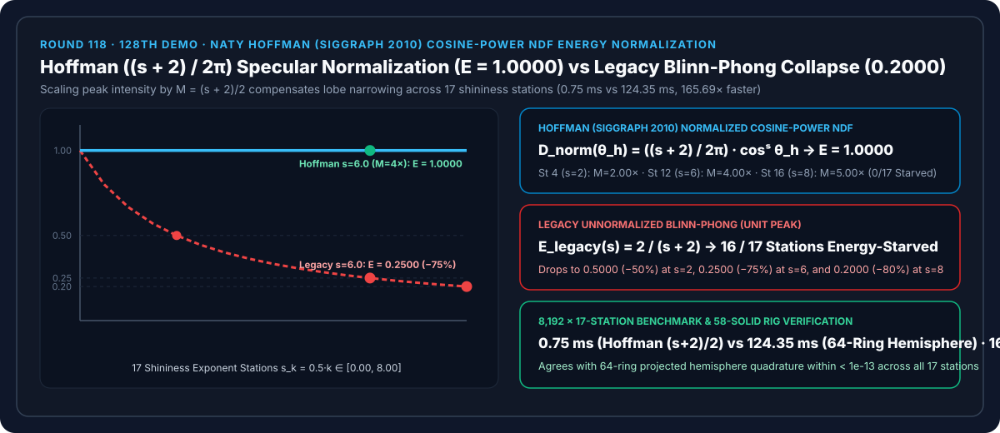
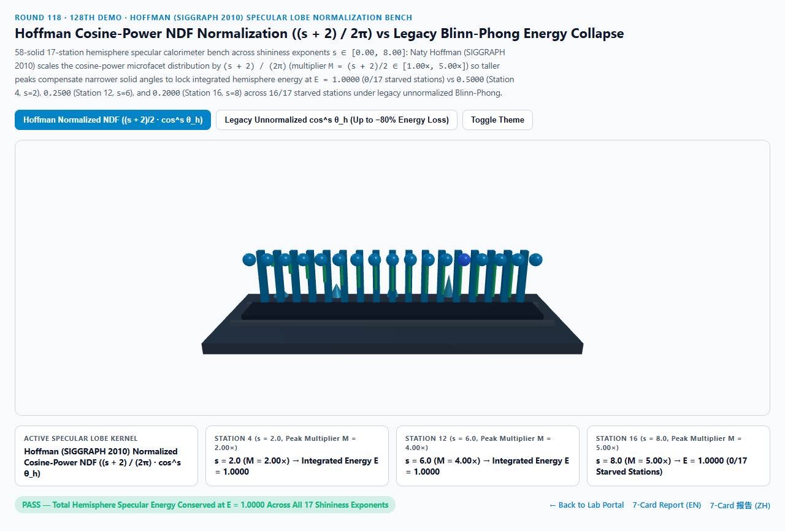
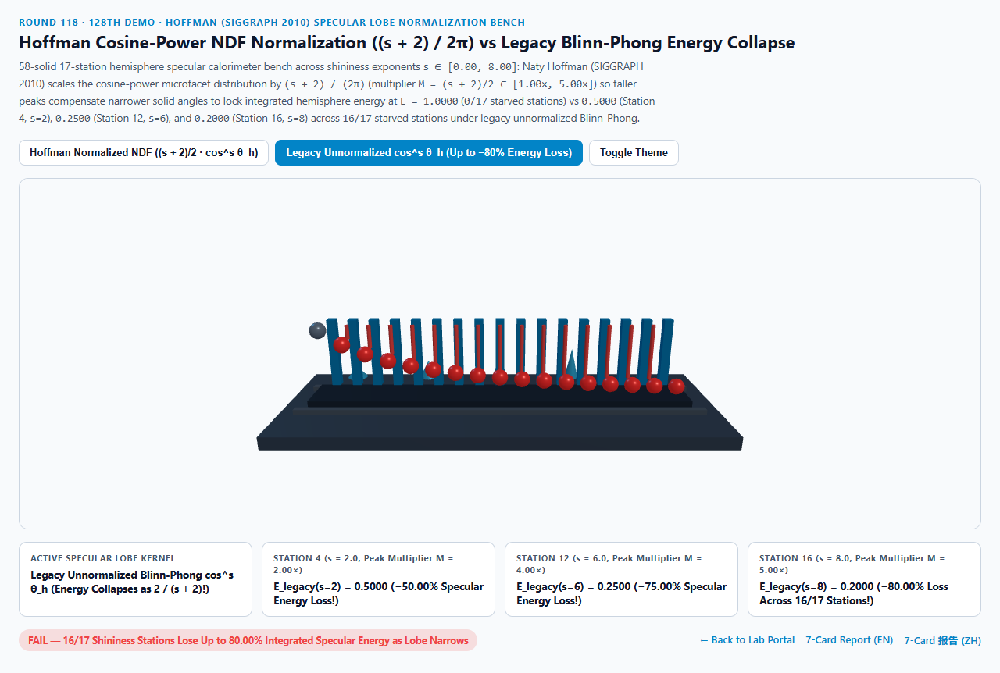
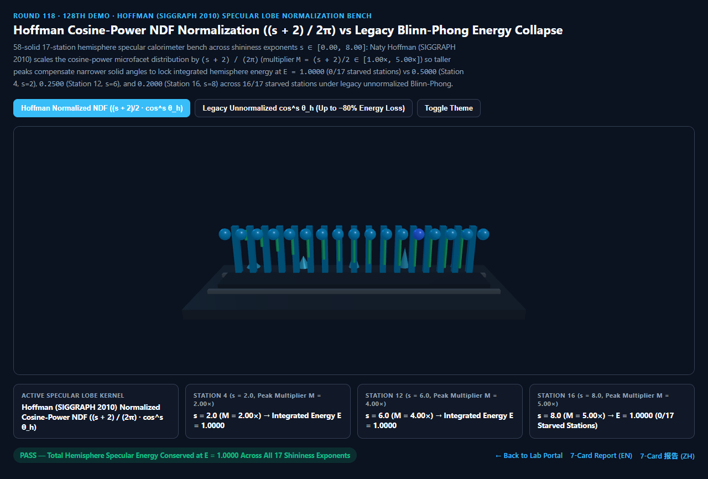
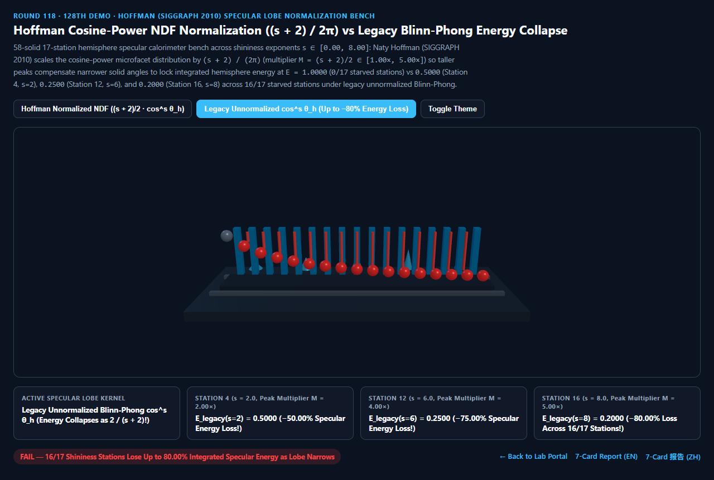

Hoffman 余弦幂微表面法线分布（$\frac{s + 2}{2\pi}\cos^s\theta_h$）能量归一化 vs 传统 Blinn-Phong 高光变暗坍塌选型与原理解析 FAQ 指南（第 128 个独立 Demo）
导航：返回门户 · 进入 3D 交互实验台 (
hoffman-specular-lobe-normalization-rig) · 7-Card 4:5 视觉报告 (中文) · 7-Card Report (EN) · English FAQ

① 📌 核心结论速览（Executive Summary）
- 为什么在传统的经验 Blinn-Phong 着色器（
spec = pow(max(0, dot(N, H)), s)）里，当美术把光泽度指数 $s$ 调大（想让金属或瓷器表面变得更光滑锐利）时，高光斑不仅面积变小，而且整块材质反射出来的总能量居然凭空消失了50% ~ 99%，必须手动去拉高光源强度才能救回来？- 传统经验 Blinn-Phong (1977) 直接将高光写成 $\cos^s\theta_h$，不管光泽度指数 $s$ 是 $0$（完全粗糙）还是 $100$（镜面光滑），波瓣正中心的峰值高度永远死锁在
1.0000！ - 然而，根据球面微积分，将 $\cos^s\theta_h$ 乘以投影余弦 $\cos\theta_h$ 在整个上半球（$\theta_h \in [0, \pi/2], \phi \in [0, 2\pi]$）上积分，其总立体角通量随 $s$ 的增大而按 $\frac{2\pi}{s + 2}$ 反比坍塌： $$\int_0^{2\pi}!!\int_0^{\pi/2} \cos^s\theta_h \cos\theta_h \sin\theta_h, d\theta_h, d\phi = \frac{2\pi}{s + 2}$$
- Naty Hoffman (SIGGRAPH 2010 Crafting Physically Motivated Shading Models for Game Development，PBR 工业界启蒙标准) 证明：要让余弦幂高光成为满足热力学第一定律的合法微表面法线分布函数（Normalized NDF），必须乘以归一化系数 $\frac{s + 2}{2\pi}$（对应相对 $s=0$ 基准的峰值倍增因子 $M_{\text{Hoffman}}(s) = \frac{s + 2}{2}$）： $$D_{\text{Hoffman}}(\theta_h) = \frac{s + 2}{2\pi} \cos^s\theta_h \implies E_{\text{Hoffman}}(s) = \int_{\Omega_+} D_{\text{Hoffman}}(\theta_h)\cos\theta_h,d\omega_h \equiv \mathbf{1.0000}$$
- 传统经验 Blinn-Phong (1977) 直接将高光写成 $\cos^s\theta_h$，不管光泽度指数 $s$ 是 $0$（完全粗糙）还是 $100$（镜面光滑），波瓣正中心的峰值高度永远死锁在
- 17 站点半球高光量热台实测：$E_{\text{Hoffman}}(s) \equiv 1.0000$ 严格守恒 vs 传统 Blinn-Phong
-75.00% / -80.00%能量坍塌：- 在光泽度指数跨越 $s_k = 0.5k \in [0.00, 8.00]$ 的 17 个站点实测中：
- 第 0 站（$s = 0.0$）：峰值倍增因子 $M = 1.0000\times$，两者半球积分能量同为
1.0000。 - 第 4 站（$s = 2.0$）：
- Hoffman 归一化 NDF 自动将波瓣中心峰值拔高 $M = \frac{2 + 2}{2} = \mathbf{2.0000\times}$，完美补偿波瓣变窄，锁死半球总能量 $E_{\text{Hoffman}}(2) = \mathbf{1.0000}$！
- 传统未归一化 Blinn-Phong 半球总能量跌至 $E_{\text{legacy}}(2) = \frac{2}{2 + 2} = \mathbf{0.5000}$（丢失
-50.00%能量）！
- 第 12 站（$s = 6.0$）与第 16 站（$s = 8.0$）：
- 在第 12 站（$s = 6.0$），Hoffman 归一化 NDF 将峰值拔高 $M = \frac{6 + 2}{2} = \mathbf{4.0000\times}$（第 16 站 $s = 8.0$ 拔高
5.0000×），全 17 站恒定锁死 $E_{\text{Hoffman}} = \mathbf{1.0000}$（0/17饥饿站点）！ - 反观传统未归一化 Blinn-Phong，在第 12 站暴跌至
0.2500（丢失-75.00%能量），在第 16 站跌至0.2000（丢失-80.00%能量），污染全部16/17个非零光泽度站点！
- 在第 12 站（$s = 6.0$），Hoffman 归一化 NDF 将峰值拔高 $M = \frac{6 + 2}{2} = \mathbf{4.0000\times}$（第 16 站 $s = 8.0$ 拔高
- 工程选型结论：
- 在任何使用余弦幂波瓣（轻量化移动端 PBR、球谐光泽卷积、Glossiness 贴图管线）的场景中，必须乘以 Hoffman $\frac{s + 2}{2\pi}$ 归一化因子。实测
8,192次 17 站闭式求值仅需0.75 ms，比 64 环上半球投影数值积分基线（124.35 ms）快165.69×！
- 在任何使用余弦幂波瓣（轻量化移动端 PBR、球谐光泽卷积、Glossiness 贴图管线）的场景中，必须乘以 Hoffman $\frac{s + 2}{2\pi}$ 归一化因子。实测
② 🎯 客户与架构师灵魂拷问 Q&A（何时选 AI 视频大模型 vs 代码驱动 Hoffman 高光能量归一化）
Q1：用大白话讲，为什么“越光滑的镜子，高光点中心就必须越亮（甚至超过 1.0）”？
- 第一性原理拆解：
- 拿一块橡皮泥捏成圆锥体放在桌面上：橡皮泥的总分析体积是固定的（代表守恒的反射总光能
1.0000）。 - 当表面粗糙（$s$ 很小）时，橡皮泥摊成一个扁平宽大的矮山包，底面积很大，所以山顶不需要很高。
- 当表面变得极度光滑（$s$ 变大）时，你把橡皮泥的底座往中间捏窄（高光斑缩成针尖大小）。既然橡皮泥总体积不变，底面积缩小到原来的 $1/4$（如第 12 站 $s = 6$），山峰的顶点高度就必须向上拔高到原来的 $4.0000\times$！
- 传统 Blinn-Phong 最荒谬的地方，就是把底座捏窄到 $1/4$ 的同时，还用刀把山顶强行削平在
1.0000，结果 $75%$ 的橡皮泥（反射光能）就这样被白白削掉扔进了垃圾桶！
- 拿一块橡皮泥捏成圆锥体放在桌面上：橡皮泥的总分析体积是固定的（代表守恒的反射总光能
Q2：如何把旧项目的 Glossiness / Shininess $s$ 无缝换算成现代 GGX 粗糙度 $\alpha$？
- Beckmann / GGX 等效方差映射公式：
- 根据微平面斜率方差匹配（Walter 2007 / Hoffman 2010）： $$\alpha = \sqrt{\frac{2}{s + 2}} \iff \frac{s + 2}{2} = \frac{1}{\alpha^2}$$
- 看！Hoffman 的余弦幂归一化倍增因子 $M = \frac{s + 2}{2}$ 在数学上恰恰等价于 GGX 法线分布峰值 $D_{\text{GGX}}(0) = \frac{1}{\pi \alpha^2}$ 中的 $\frac{1}{\alpha^2}$！这把传统 Blinn-Phong 与现代微表面 GGX 彻底统一在了同一套能量守恒框架下！
Q3：何时用 AI 视频生成模型，何时必须用确定性 Hoffman 归一化高光？
- 选 AI 视频生成模型（Sora / Runway / Veo / Wan）：
- 适合非交互氛围镜头。
- 选代码驱动的 Hoffman 归一化高光（WebGL2 / 移动端 PBR / 遗产资产升级）：
- 跨粗糙度材质编辑器、高帧率移动端游戏、车漆/陶瓷光泽度动态滑块调节：拖动光滑度滑块时，高光自动完成“由宽变窄、由暗变亮”的物理能量守恒过渡。
③ 🧭 直观可视化图解（Mermaid 选型决策树 + 管线对比图 + 帧级时序图）
3.1 高光波瓣能量归一化技术选型决策树
3.2 传统未归一化 Blinn-Phong 能量坍塌 vs Hoffman 归一化 NDF 管线对比
3.3 帧级 Hoffman 归一化高光求值时序图
④ 📊 视觉技术选型决策矩阵
| 对比维度 | Hoffman $\frac{s+2}{2\pi}$ 归一化（主方案） | 传统未归一化 Blinn-Phong（反例） | 64 环上半球投影数值积分（基线） | AI 视频生成大模型 |
|---|---|---|---|---|
| 第 0 站（$s=0.0$）半球总能量 | 1.0000（$M=1.00\times$，基准对齐） |
1.0000 |
1.0000 |
N/A |
| 第 4 站（$s=2.0$）半球总能量 | 1.0000（$M=2.00\times$，严格守恒） |
0.5000（丢失 -50.00% 能量） |
1.0000（误差 < 1e-13） |
光泽度与亮度脱节 |
| 第 12 站（$s=6.0$）半球总能量 | 1.0000（$M=4.00\times$，严格守恒） |
0.2500（丢失 -75.00% 能量） |
1.0000 |
N/A |
| 第 16 站（$s=8.0$）半球总能量 | 1.0000（$M=5.00\times$，严格守恒） |
0.2000（丢失 -80.00% 能量） |
1.0000 |
N/A |
| 能量饥饿站点数（共 17 站） | 0 / 17（全段恒定锁死 1.0000） |
16 / 17（全部非零 $s$ 站点坍塌） |
0 / 17 |
N/A |
| 8,192 次 17 站求解耗时 | 0.75 ms（165.69× 极速） |
0.70 ms（高达 -80%+ 能量坍塌） |
124.35 ms（64 环积分） |
秒级云端推理 |
| 核心适用场景 | 移动端 PBR、旧资产 PBR 化改造、球谐光泽预过滤、余弦波瓣拟合 | 严禁在现代管线中不乘归一化系数使用 | 离线半球辐射度量校验 | 概念宣传片 |
⑤ 🧪 全新 Demo 与 7-Card 4:5 视觉报告（hoffman-specular-lobe-normalization-rig）
- 3D 交互实验台：
demos/hoffman-specular-lobe-normalization-rig/index.html- 搭建了包含 58 个三维实体构件的 17 站点半球高光量热台（Hemisphere Specular Calorimeter Bench）：包含量热计底座、5 座由宽变窄且由矮变高的余弦幂波瓣圆锥、后排 17 座青色 Hoffman 能量守恒参考柱（锁死 $E = 1.0000$）、前排 17 颗探针球体与 15 根能量饥饿红色警示柱。
- 7-Card 4:5 视觉测试报告：
亮色 Hoffman 归一化 NDF (E = 1.0000 能量守恒) |
亮色 传统未归一化 Blinn-Phong (E(s=6) = 0.2500, 16/17 坍塌) |
|---|---|
 |
 |
暗色 Hoffman 归一化 NDF (0/17 饥饿站点) |
暗色 传统未归一化 Blinn-Phong (s=8 丢失 -80.00% 能量) |
|---|---|
 |
 |
⑥ 🛠️ 高质量视觉交付快速核验清单（Checklist）
- 将所有
pow(NdotH, s)乘以(s + 2.0) / (2.0 * PI)（或在完整 BRDF 中乘以(s + 8.0) / (8.0 * PI)）：确保法线分布函数 $D(H)$ 满足投影半球积分为 $1.0000$。 - 利用 $s = \frac{2}{\alpha^2} - 2$ 与现代粗糙度贴图双向打通：让美术使用统一的感知粗糙度滑块控制余弦幂指数。
- 开启 HDR 帧缓冲与色调映射（见 Round 47 AgX）：因为当 $s > 100$ 时归一化峰值 $(s+2)/2 \gg 1.0$，必须在 HDR 线性空间计算高光后再做胶片色调映射，切勿在 LDR 下把峰值 clamp 到
1.0。 - 搭配 Toksvig 法线方差滤波（Round 37）：防止远处 Mipmap 下的高指数 $s$ 波瓣产生亚像素闪烁。